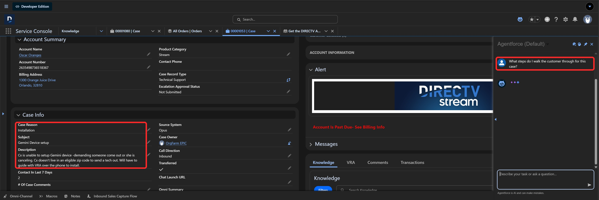
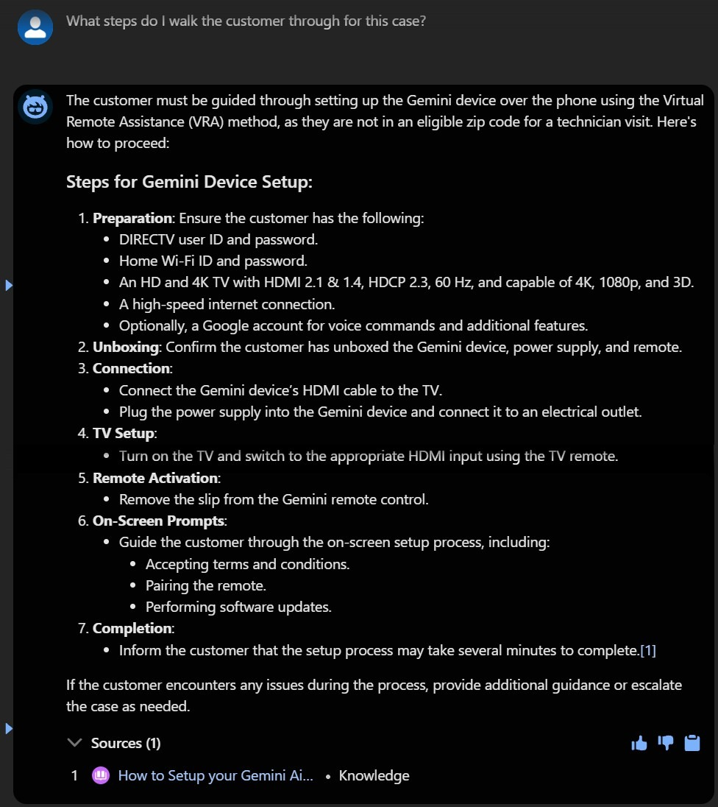
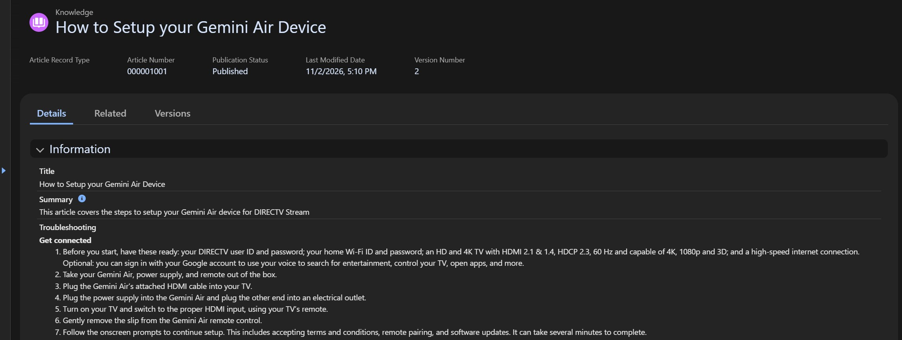
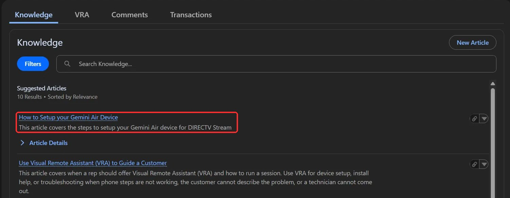
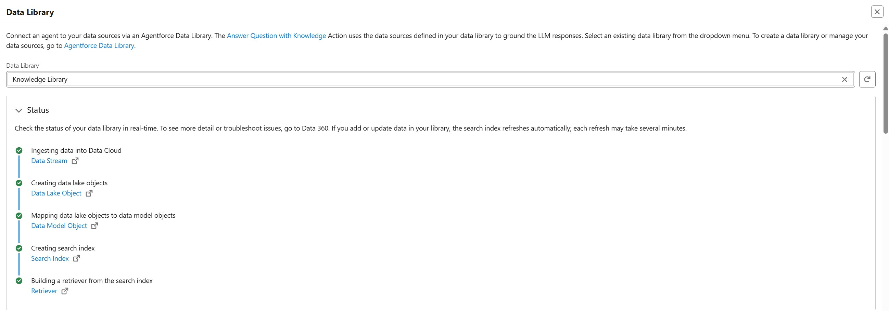
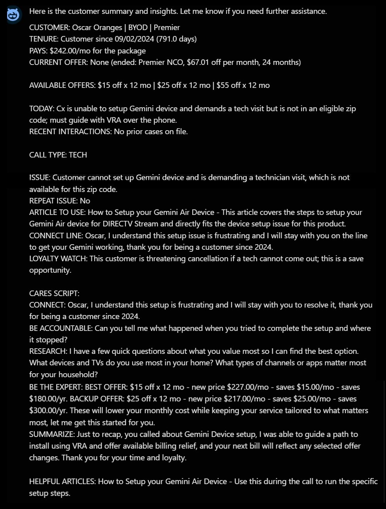
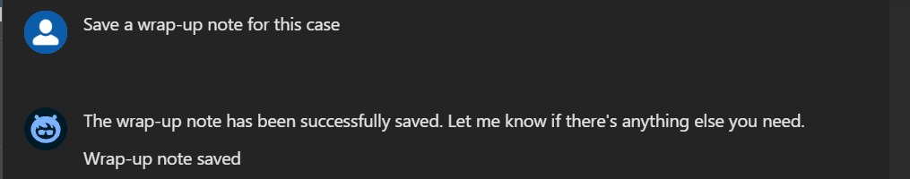
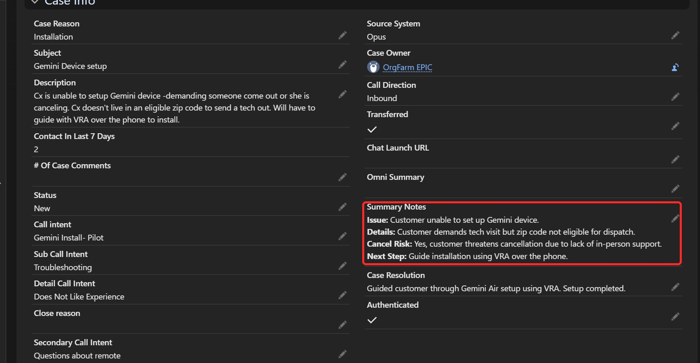

When a call comes in, the case is already on screen. This AI agent reads that case, searches Knowledge for the matching article, and gives the rep the steps with a link to the source. It can also check for repeat issues, summarize the customer, and save a wrap-up note.
On a live call, the case and account pop up on screen, but that's only the start. The rep still has to find the right article, read through it, and walk the customer through the fix. Meanwhile the customer is waiting, and they may already be talking about canceling.
Every minute spent hunting for an article is a minute the customer sits on the line.
Suggested articles are a good start, but the rep still has to open one and find the part that applies.
The steps live in the article, but what matters on this call lives in the case. A rep has to hold both in their head at once.
A customer can't set up their Gemini device. They want a technician or they'll cancel, but their zip code isn't eligible for a visit, so the rep has to guide them over the phone. The rep has the case open and asks the AI agent for help.




A standard action that reads the open case, so the AI agent knows the Subject and Description.
A standard action that searches the articles and writes the answer from what it finds.
The set of content the AI agent is allowed to search. Mine holds the Knowledge articles.
A Data Library setting that links each answer back to the article it came from.

The rep can also ask for a summary. This reuses my Customer Insights project, so the same case gets a call-ready snapshot, a repeat-issue check, the matching article and a cancel-risk warning. At the end of the call, it can save a wrap-up note to the case.



My first test failed. The Knowledge action can't read a record, so it searched for the words "this case's issue." Adding Get Record Details and an instruction to read the case first fixed that.
The word "VRA" in the case description once pulled the wrong article, and the setup steps disappeared. Now the subject finds the steps, and the description shapes how the rep handles the customer.
The list of what the customer needs sat apart from the numbered steps, so answers kept dropping it. Moving it into step 1, and searching by subject, brought it back in my tests.
Built in my own Salesforce developer org with mock DirecTV-style data. No real customer data is used. Knowledge articles are based on public support content.